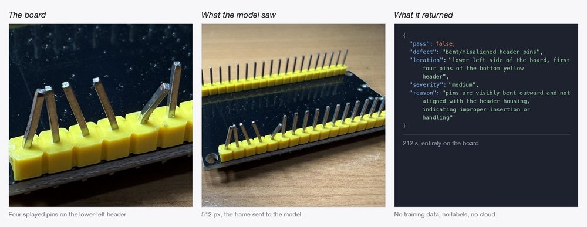
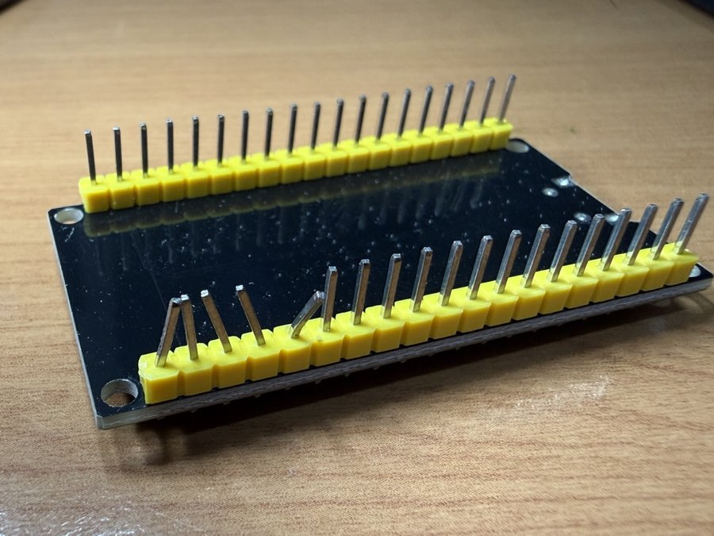

91% of peak memory bandwidth, spent generating 2.84 tokens a second
2.84 tokens a second sounds slow next to anything in our own catalog. It isn't slow — it's close to physically maximal. Do the arithmetic on what a dense 30B model actually has to read off disk and RAM for every single token, and 2.84 tok/s on a Qualcomm Dragonwing IQ-9075 works out to roughly 47.5 GB/s of sustained memory traffic, against a board whose own measured peak read bandwidth is about 52 GB/s. That's 91% of everything the memory bus can physically do, spent inspecting a hand-soldered circuit board for a bent pin — with no cloud call anywhere in the loop.
Edge in the Wild is our occasional spotlight on real builders running AI on hardware they own. This one: Muse Glimmer 30B on Dragonwing IQ-9075: an LLM that sees, published August 12, 2026 by Hackster.io contributor Samuel Alexander (s4muela) — a Top-1%-contributor maker in Hackster's Qualcomm channel, and this is his second guide on this specific board, following an earlier one benchmarking YOLOv11/YOLO26 object detection on the same hardware's NPU. Code and full write-up: github.com/SamuelAlexander/dragonwing-muse-glimmer-30b, Apache-2.0.

The board and the math behind "slow"
The IQ-9075 EVK pairs Cortex-A78C CPU cores with a Hexagon NPU (v73 HTP library) and up to 36 GB of LPDDR5-3200 with inline ECC, running Ubuntu 24.04. Alexander built llama.cpp for it natively (-DGGML_NATIVE=ON, to get the board's Cortex-A78C dot-product instructions) and ran it on the CPU backend — no NPU offload for the language model itself. The model is Meta's Muse-Glimmer-30B, Apache-2.0: a 52-layer, 27.85B-parameter text tower plus a 1.8B-parameter vision encoder, packaged as a 16.8 GB k-quant GGUF plus a separate 1.4 GB vision-projector file, with a 131,072-token context window.
Here's the number that makes 2.84 tokens/sec the right result instead of a disappointing one: this is a dense model, meaning every one of its roughly 15.6 GB of resident weights per forward pass has to be read from memory for every single token generated, with no shortcut. 2.84 tok/s × 15.6 GB/token comes out to about 47.5 GB/s of sustained read traffic — against the board's own measured peak of roughly 52 GB/s. The model isn't struggling; the memory bus is running flat out. It's the same reason our own digest today just passed on NVIDIA's Nemotron 3.5 Lightning 30B-A3B for the opposite reason — that model only activates 3B parameters per token, so a mixture-of-experts architecture can outrun its own on-disk size. A dense model like Muse-Glimmer can't: on-disk size and per-token traffic are the same number.
Three real tasks, one honestly-reported mistake

The guide runs three genuinely different workloads, each with a checkable output rather than a vibe:
- Visual defect inspection — photograph the board above and ask the model, in plain English, to check for defects. It correctly flags the bent header pins in structured JSON. It also hallucinates a component label — "D6" on a board that only has D1 through D5 — and Alexander reports the miss as plainly as the hit, calling it out as the specific failure mode to design around rather than editing it out of the writeup. A full verdict takes 212–277.7 seconds depending on how much reasoning effort is dialed in; encoding the image alone takes 34.0 seconds at 512px and 131.9 seconds at 1024px — roughly 4x the cost for 2x the resolution.
- Tool calling — given three greenhouse-control functions (
run_pump,set_vent,log_observation) and a sensor report, the model picks the single correct call. - Long-document Q&A — the board's own 96,951-character official documentation, ingested once (a real 66 minutes, at these speeds), then cached: a KV-cache slot save/restore round-trip measured at 2.4 ms to save and 1.5 ms to restore, so follow-up questions cost about a minute each instead of another hour. One of those follow-ups catches a genuine inconsistency between two of the vendor's own doc pages over which Bluetooth version the board supports — which Alexander then verifies against the board's actual
hciconfigoutput, not just a second LLM opinion.
Source: github.com/SamuelAlexander/dragonwing-muse-glimmer-30b, README and benchmark results.
Two tiers, and why the slow one is the point
Alexander's framing ties directly back to his earlier NPU guide on the same board: YOLOv11 object detection runs at 166 FPS, about 6 ms per frame, on the Hexagon NPU — a "reflex tier" for always-on, cheap, fast perception. Muse-Glimmer-30B is the "deliberation tier" sitting behind it: slow, occasional, and reserved for judgment calls a reflex model can't make — did the solder job actually pass, does this reading warrant venting the greenhouse, does this spec sheet actually match the hardware. Two tiers, two very different latency budgets, both running on the same box with nothing leaving it.
He's explicit about why that constraint matters, not just how it works: the inspection photos in this guide never touched a network, and for a factory line, a clinic, or anything under an NDA, that's often the only acceptable arrangement rather than a nice-to-have. It's close to a textbook version of the thesis this blog keeps returning to — the model comes to your data, not your data to the model — running on hardware that has nothing to do with our own catalog or our own app.
Why it isn't (and won't soon be) in our catalog
We covered the reason in today's digest: bartowski's Q4_K_M of Muse-Glimmer-30B runs about 17.3 GB, and the model's own resident footprint on this board — weights, vision encoder, and a full 131K-token KV cache — comes to roughly 21.6 GB of the board's 36 GB. That's a board built to hold a model this size with room to spare, not a phone with a few gigabytes to give one app. What we'd still hold our own catalog copy to is the standard Alexander sets here without being asked: report the honest failure mode next to the win, show the actual memory math instead of a marketing tok/s figure, and verify a claim against the real hardware instead of trusting the model's own answer.
Source / credit: Muse-Glimmer-30B is Meta's model, Apache-2.0. This build and every number above is the independent work of Hackster.io contributor Samuel Alexander (s4muela) — full guide at Hackster.io, code at github.com/SamuelAlexander/dragonwing-muse-glimmer-30b. Photos are the project's own.
Discuss this on the forum → — running a dense model on bandwidth-limited edge hardware yourself? Tell us what your memory bus actually sustains.